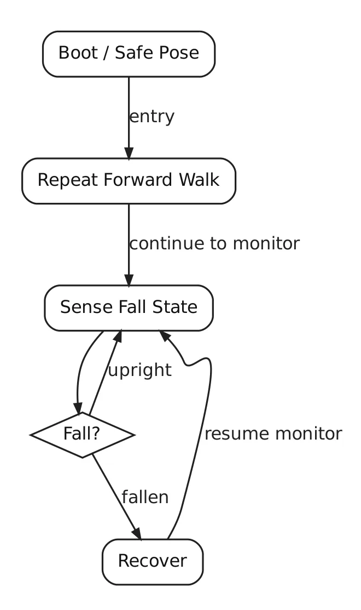
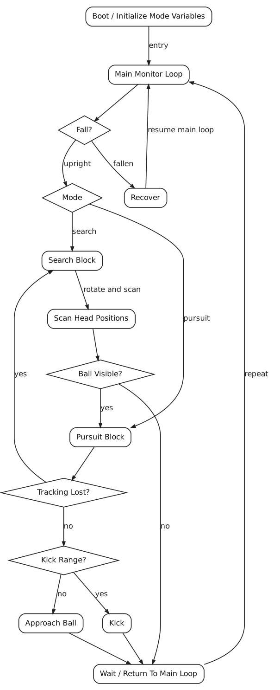
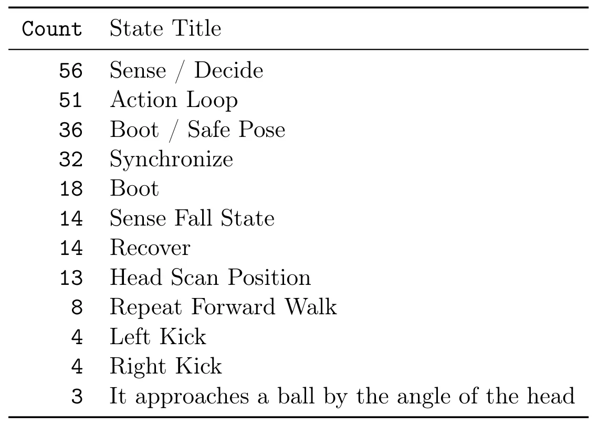
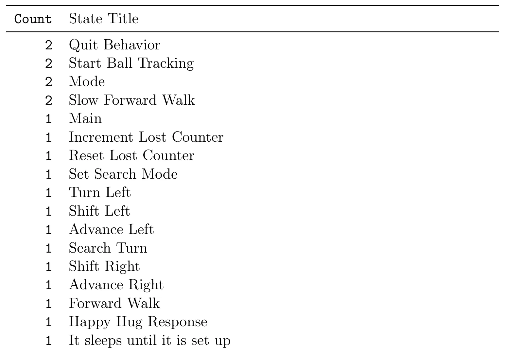
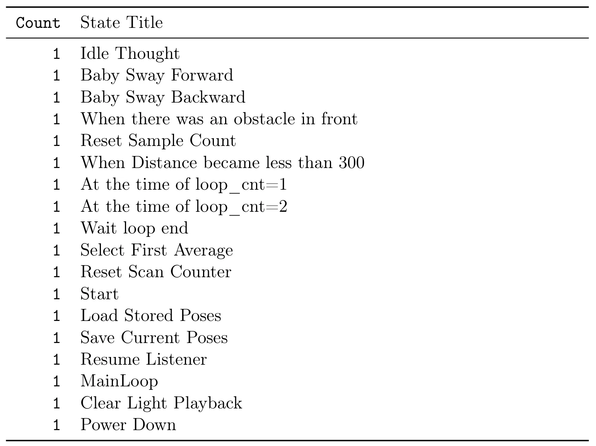

Sony ERS-111 R-CODE 中的机器人行为状态词汇A Behavioral State Vocabulary in Sony ERS-111 R-CODE
与机器人软件架构相关但不涉及 SLAM/GNSS/重建；价值主要在受限平台的确定性行为组织和历史分析。
一句话工作总结
从 AIBO 示例脚本归纳初始化、感知、动作、同步与恢复组成的紧凑状态控制语法。
摘要
本文对 Sony ERS-111 AIBO 的 R-CODE 示例脚本生成行为图并开展语料级比较，从跨脚本重复出现的命名状态中归纳初始化、感知、迭代动作、同步和恢复等控制词汇。作者认为这种紧凑的具身状态语法不仅可用于历史软件分析，也可作为受限原生机器人系统构造可封装行为例程的中间表示，以支持确定性控制、直接硬件访问和模块化行为组合。
This paper presents a corpus-level analysis of generated behavior diagrams derived from Sony's R-CODE sample distribution for the ERS-111 AIBO. Rather than reading each script in isolation, the study compares named states across the corpus to identify the recurring control vocabulary that structures the sample set. The resulting aggregate shows that many superficially different routines are built from a compact embodied grammar centered on initialization, sensing, iterative action, synchronization, and recovery. In addition to historical analysis, the paper argues that this form of state-based abstraction is useful as an intermediate representation for constructing new encapsulated behavior routines, especially on constrained native robotic systems where deterministic control, direct hardware access, and modular behavioral composition remain important.
中文解读摘录
图表/页面预览

{kind=link}

{kind=link}

{kind=link}

{kind=link}

{kind=link}
